1084B34 cartridge engine oil filter support - r + r
- Path
- Procedures > 10 ENGINE > 1084 ENGINE LUBRICATION SYSTEM > 1084B engine oil lubrication circuit > 1084B34 cartridge engine oil filter support - r + r
- Kind
- repair procedure (removal / refitting; the operation number is the code)
- Applies to
- engines: 3.2 V6; all production periods
- Interactive page
- https://sloeber94.github.io/elrnDB-a147/en/#/3024994
Applies to: engines: 3.2 V6; all production periods
 Removing
Removing
 Refitting
RefittingPosition the vehicle on the ramp.
Ensure that the ignition key is in the OFF position, then disconnect the negative battery terminal (-).
 | Name | Connector |
|---|---|---|
- | Battery |
Drain the air conditioner coolant circuit 5040A10 Air conditioning refrigerant CIRCUIT - Draining and Refilling .
Proceed with removal 4450B04 right front wheel r r .
Proceed with removal 7055B54 under-engine guard - r r .
Proceed with removal 7055B64 Engine compartment DUST shield in front wheel arch (one), left or right - R.R. .
Proceed with removal 7055B42 Additional FRONT WHEEL ARCH (one), left or right - R.R. .
Proceed with removal 7210E10 R.R. CENTRE PILLAR .
Proceed with the removal 5540B76 Front LIGHT CLUSTER with fog light (one), left or right - R.R. with interfering components removed (Right and left sides).
Proceed with removal 7025A34 bonnet lid lock (one) - r+r or repair .
Proceed with removal 7210A15 R.R. HEADLAMP HOUSING/FRONT WING CROSSMEMBER .
Proceed with removal 1076B82 left exhasust pipe between catalytic preconverter and converter r r .
Proceed with removal 1076B84 right exhaust pipe between caralytic preconverter and converter r r .
Proceed with removal 1080B39 right catalytic preconverter r r or replace cylinder head gasket .
Proceed with removal 4410A80 damper lower fork - r r .
Proceed with removal 2710A31 intermediate drive shaft - r r .
1. Disconnect the electrical connections from the alternator.
| Name | Connector |
|---|---|---|
1 | Alternator |
2. Loosen the band (2a) and move the electrical wiring (2b).
3. Undo the connector (3a) and disconnect the supply pipe to the engine oil cooling radiator (3b), cartridge engine oil filter mounting side.
4. Undo the upper bolt (4a) and the nut (4b) fixing the cartridge engine oil filter mounting.
5. Disconnect the electrical connection from the engine oil pressure warning light switch.
| Name | Connector |
|---|---|---|
5 | Engine oil pressure sensor |
6. Undo and remove the cartridge engine oil filter using a suitable tool.
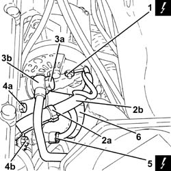
Applies to: engines: 3.2 V6; all production periods
1. Loosen the engine components single drive belt tension adjusting the belt tensioner.
2. Lock the tensioner (2a) with the belt slack inserting a suitable peg (2b).
3. Remove the engine components single drive belt.
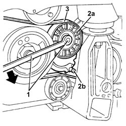
Applies to: engines: 3.2 V6; all production periods
1. Disconnect the electrical connection from the engine oil temperature sender unit.
2. Undo the bolt (2a) and remove the single drive belt fixed tensioner (2b).
3. Undo the lower bolt (3a), loosen the upper bolt (3b) and rotate the alternator (3c) upwards locking it in this position using the upper bolt.
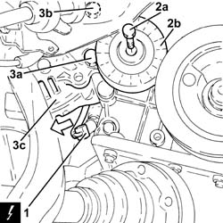
Applies to: engines: 3.2 V6; all production periods
1. Undo the nut (1a) and remove the engine oil/power assisted steering fluid pipes mounting bracket (1b).
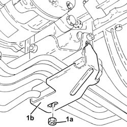
Applies to: engines: 3.2 V6; all production periods
1. Undo the bolt (1a) and remove the engine oil/power assisted steering fluid pipes lower mounting bracket (1b).
2. Undo the bolts (2a) and remove the engine oil/power assisted steering fluid pipes upper mounting bracket (2b).
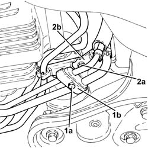
Applies to: engines: 3.2 V6; all production periods
1. Undo the connector (1a) and disconnect the return pipe from the engine oil cooling radiator (1b), cartridge engine oil filter mounting side.
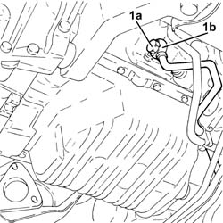
Applies to: engines: 3.2 V6; all production periods
1. Undo the bolts fixing the alternator mounting to the engine crankcase.
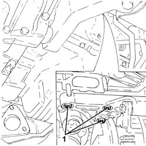
Applies to: engines: 3.2 V6; all production periods
1. Undo the bolt fixing the timing belt right rear cover to the alternator spacer.
2. Undo the lower bolt fixing the alternator mounting spacer bracket to the engine crankcase.
3. Undo the upper bolt fixing the alternator mounting spacer bracket to the right cylinder head.
4. Move the alternator assembly (4a), alternator mounting (4b) and alternator mounting spacer bracket (4c) away from the engine crankcase.
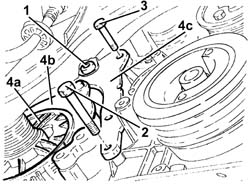
Applies to: engines: 3.2 V6; all production periods
1. Undo the nuts (1a) and the bolts (1b) and remove the cartridge engine oil filter mounting (1c).
2. Remove the gasket.
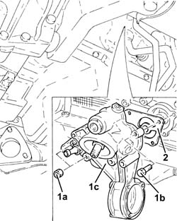
Applies to: engines: 3.2 V6; all production periods
Refitting
Removing1. Place the cartridge engine oil filter mounting (1a), complete with gasket (1b), back in its housing and secure it tightening the bolts (1c) and the nuts (1d) to the recommended torque.
 | Fastening | Component | Ø | Value (daNm) |
|---|---|---|---|---|
1c | Bolt | DRIVE SHAFT OIL FILTER/BEARING MOUNT | M8 | (Engine crankcase side) 2.3 ÷ 2.8 |
| Fastening | Component | Ø | Value (daNm) |
|---|---|---|---|---|
1d | Bolt | DRIVE SHAFT OIL FILTER/BEARING MOUNT | M8 | (Engine crankcase side) 2.3 ÷ 2.8 |
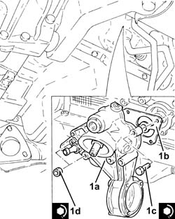
Applies to: engines: 3.2 V6; all production periods
Place the alternator assembly, alternator mounting and alternator mounting spacer bracket back in its housing.
Tighten the bolts fixing the alternator mounting spacer bracket.
Tighten the bolt fixing the timing belt right rear cover to the alternator spacer.
1. Tighten the bolts fixing the alternator mounting to the engine crankcase to the recommended torque.
| Fastening | Component | Ø | Value (daNm) |
|---|---|---|---|---|
1 | Bolt | ALTERNATOR SUPPORT | M8 | (Engine crankcase side) 1.9 ÷ 2.3 |
| Fastening | Component | Ø | Value (daNm) |
|---|---|---|---|---|
1 | Bolt | ALTERNATOR SUPPORT | M10 | (Engine crankcase side) 4.3 ÷ 5.3 |
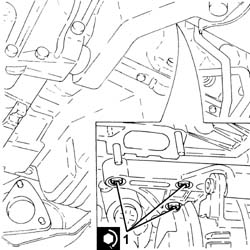
Applies to: engines: 3.2 V6; all production periods
1. Connect the engine oil cooling radiator return pipe (1a), cartridge engine oil filter mounting side and tighten the connector (1b) to the recommended torque.
| Fastening | Component | Ø | Value (daNm) |
|---|---|---|---|---|
1b | - | - | - | - |
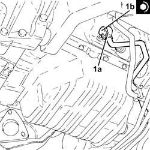
Applies to: engines: 3.2 V6; all production periods
Place the engine oil/power assisted steering fluid pipes upper mounting bracket back in its housing and secure it using the bolts.
Place the engine oil/power assisted steering fluid pipes lower mounting bracket back in its housing and secure it using the bolts.
Place the engine oil/power assisted steering fluid pipes mounting bracket back in its housing and secure it using the bolts.
1. Tighten the bolts fixing the alternator to the recommended torque.
| Fastening | Component | Ø | Value (daNm) |
|---|---|---|---|---|
1 | Bolt | ALTERNATOR ASSEMBLY | M8 | (Support side) 2.3 ÷ 2.8 |
2. Place the engine components single drive belt fixed tensioner (2a) back in its housing and secure by tightening bolt (2b) to the recommended torque.
| Fastening | Component | Ø | Value (daNm) |
|---|---|---|---|---|
2b | Bolt | FIXED SINGLE SERVICE BELT TENSIONER | M8 | 2.3 ÷ 3.3 |
3. Connect the electrical connection to the engine oil temperature sender unit.
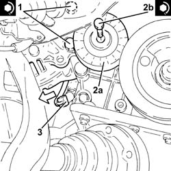
Applies to: engines: 3.2 V6; all production periods
Fit the single drive belt.
Use a spanner on the moving tensioner to extract the peg.
1. Lubricate the gasket with engine oil and fit the engine oil filter, tightening fully by hand.
2. Connect the electrical connection to the engine oil pressure warning light switch.
3. Connect the engine oil cooling radiator supply pipe (3a), cartridge engine oil filter mounting side and tighten the connector (3b) to the recommended torque.
| Fastening | Component | Ø | Value (daNm) |
|---|---|---|---|---|
3b | - | - | - | - |
4. Place the electrical wiring (4a) back in its housing and secure it using the band (4b).
5. Connect the electrical connections to the alternator.
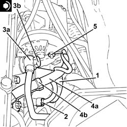
Applies to: engines: 3.2 V6; all production periods
Proceed with refitting 2710A31 intermediate drive shaft - r r .
Proceed with refitting 4410A80 damper lower fork - r r .
Proceed with refitting 1080B39 right catalytic preconverter r r or replace cylinder head gasket .
Proceed with refitting 1076B84 right exhaust pipe between caralytic preconverter and converter r r .
Proceed with refitting 1076B82 left exhasust pipe between catalytic preconverter and converter r r .
Proceed with refitting 7210A15 R.R. HEADLAMP HOUSING/FRONT WING CROSSMEMBER .
Proceed with refitting 7025A34 bonnet lid lock (one) - r+r or repair .
Proceed with the refitting 5540B76 Front LIGHT CLUSTER with fog light (one), left or right - R.R. with interfering components removed (Right and left sides).
Proceed with refitting 7210E10 R.R. CENTRE PILLAR .
Proceed with refitting 7055B42 Additional FRONT WHEEL ARCH (one), left or right - R.R. .
Proceed with refitting 7055B64 Engine compartment DUST shield in front wheel arch (one), left or right - R.R. .
Proceed with refitting 4450B04 right front wheel r r .
Refill the engine oil lubrication system 0010T11 engine oil check level and top up .
Proceed with refitting 7055B54 under-engine guard - r r .
Fill the air conditioner coolant circuit 5040A10 Air conditioning refrigerant CIRCUIT - Draining and Refilling .
Connect the negative (-) battery terminal.
Remove the car from the ramps.
Topics linked from this page (18)
- 0010T11 engine oil check level and top up
- 1076B82 left exhasust pipe between catalytic preconverter and converter r r
- 1076B84 right exhaust pipe between caralytic preconverter and converter r r
- 1080B39 right catalytic preconverter r r or replace cylinder head gasket
- 2710A31 intermediate drive shaft - r r
- 4410A80 damper lower fork - r r
- 4450B04 right front wheel r r
- 5040A10 Air conditioning refrigerant CIRCUIT - Draining and Refilling
- 5540B76 Front LIGHT CLUSTER with fog light (one), left or right - R.R. with interfering components removed
- 7025A34 bonnet lid lock (one) - r+r or repair
- 7055B42 Additional FRONT WHEEL ARCH (one), left or right - R.R.
- 7055B54 under-engine guard - r r
- 7055B64 Engine compartment DUST shield in front wheel arch (one), left or right - R.R.
- 7210A15 R.R. HEADLAMP HOUSING/FRONT WING CROSSMEMBER
- 7210E10 R.R. CENTRE PILLAR
- A1B Battery ( Connectors )
- A10 Alternator
- K30 Engine oil pressure sensor (switch)